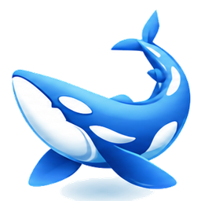

OrcaRouterLitePut a budget on every coding agent
Orca runs on this computer and sends your agents' requests to the provider you choose. If you add an OrcaRouter key, it's also the backup when a provider fails.
You're set up
Click the Orca icon in your menu bar or system tray to see today's spend. Restart any open Claude Code sessions so they use Orca.